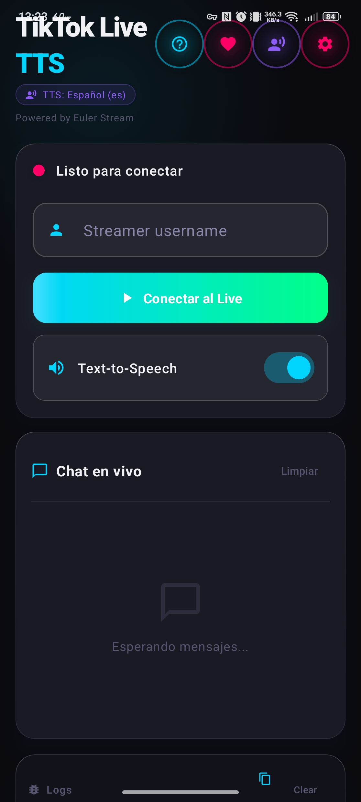
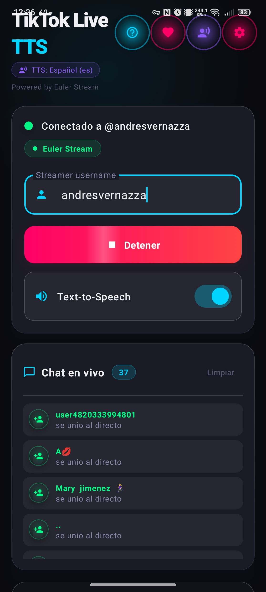

Escucha comentarios, regalos y nuevos seguidores en tiempo real mediante síntesis de voz inteligente. Diseñado especialmente para streamers de videojuegos, IRL y creadores que necesitan responder sin apartar la mirada de la acción.


Haz clic en los eventos de prueba para simular cómo StreamVoice procesa el chat en directo sin saturarte.
En directo, miles de mensajes compiten por sonar. Mira cómo responde StreamVoice de forma balanceada:
Cada función fue pensada para que te concentres 100% en tu contenido y en tu juego.
Otras apps acumulan hasta 5 minutos de retraso cuando entran muchos mensajes. StreamVoice purga el spam y prioriza regalos y donaciones al instante.
Conexión directa por WebSockets nativos más soporte para proveedores como Euler Stream y TikTool con conmutación por error automática.
Permite escuchar la voz por el canal de accesibilidad o multimedia. Tu música o el audio del juego nunca silenciarán la lectura del chat.
Solo escribes tu nombre de usuario público @streamer. Jamás te pedimos contraseñas, tokens de cuenta ni accesos intrusivos.
Compatible con motores de voz del sistema (Google TTS, Samsung) y síntesis local rápida. Personaliza el tono, volumen y velocidad a tu gusto.
Lista negra de palabras personalizable, omisión de emojis repetidos y bloqueo de comandos spam para mantener tu directo limpio y seguro.
Sin registros engorrosos ni configuraciones complejas en la PC.
Abre la app en tu teléfono Android e ingresa tu nombre de usuario público de TikTok donde estarás transmitiendo.
Elige qué quieres escuchar: comentarios, nombres de donadores de regalos, nuevos seguidores o saludos automáticos.
Toca "Conectar", ponte tus auriculares y abre tu juego favorito o atiende tu directo. La app funcionará en segundo plano.
StreamVoice: Tok se encuentra actualmente en fase de revisión y prueba cerrada en Google Play Console. Puedes instalar el APK verificado de inmediato o unirte a nuestro grupo de testing para recibir actualizaciones oficiales de Play Store.
Instala de inmediato en tu dispositivo Android. Firma oficial de Silver Devs Labs, compatible con Play Protect.
Forma parte de la comunidad de testers para probar versiones beta directamente desde la Play Store antes que nadie.